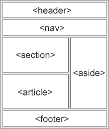

首页
语义化
pubdate:2019-9-19 14:53:52
tags:html，编程，语义化
HTML 语义化元素

MDN 关于语义化的介绍
article 独立的自包含内容 一篇文章本身应该有意义，应该可以从网站的其他部分独立阅读。
aside 它被放置在（如侧栏）的内容定义了一些内容一边
details 可创建一个挂件，仅在被切换成展开状态时，它才会显示内含的信息。
figcaption
figure 为图像添加可视化解释
footer 一个文件或部分页脚
header 一个文件或部分标题
main
mark
nav 定义了一组导航链接
section 一个部分是内容的主题分组，通常带有标题。
summary
time 表示事件